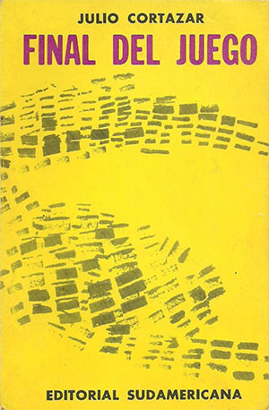
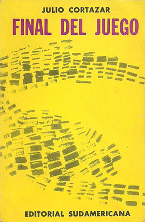
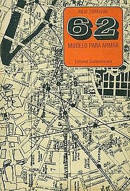
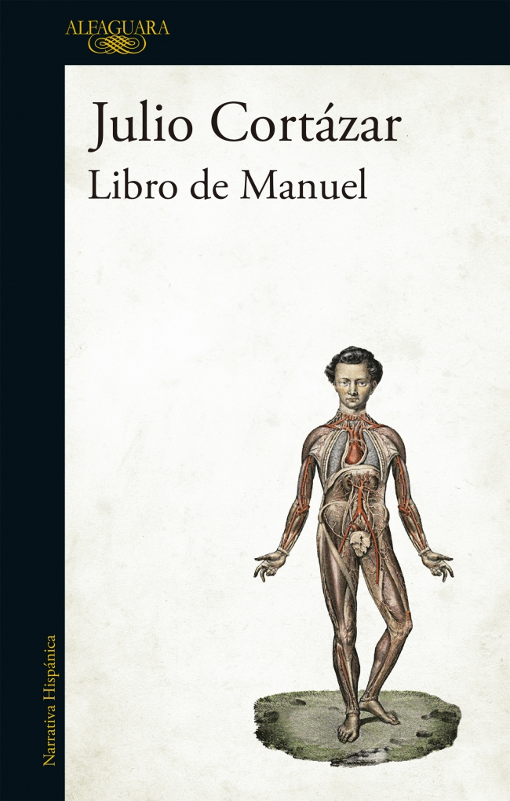
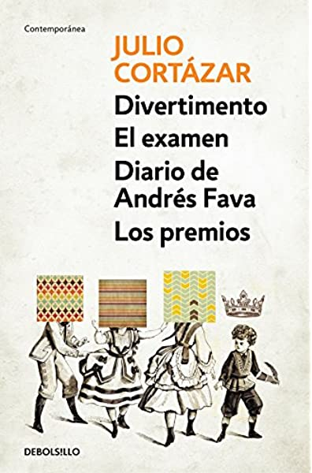
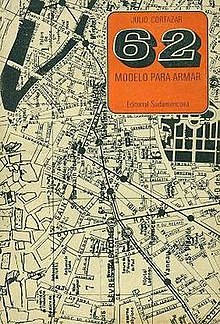
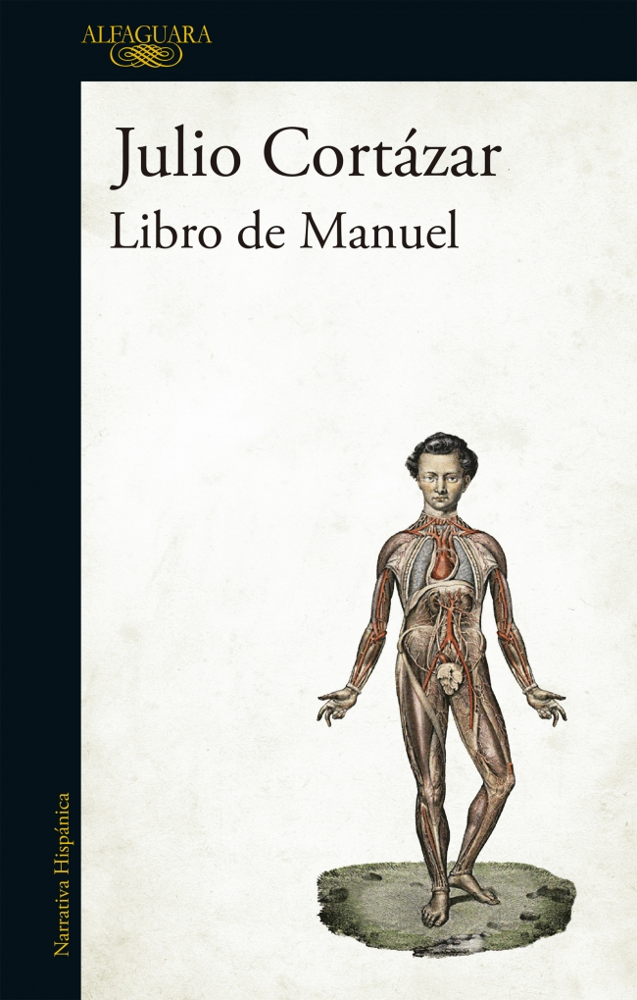
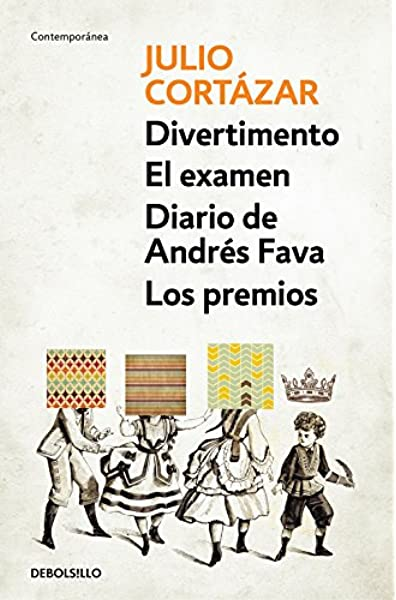

Julio Cortázar
Por
Andrés Ricardo Garza Vela
Vida
Julio Florencio Cortázar nació en Bruselas el 26 de agosto de 1914 “por accidente”.
Mi nacimiento fue un producto del turismo y la diplomacia
Su familia regresó a Argentina cuando tenía cuatro años.
Su padre abandonó a la familia cuando tenía seis años.
Cortázar fue bastante enfermizo, lo cuál lo orilló a la lectura
Entre 1928 y 1932 estudió para ser maestro normal. También descubrió Opio de Jean Cocteau.
En 1935 se enlistó en la Facultad de Filosofía y Letras, la cuál dejó al año para ayudar a su madre económicamente.
Cortázar daría clases en múltiples partes de Argentina hasta la elección de Perón, en 1945.
Por estos años empezó a reunir cuentos y publicar material bajo el seudónimoJulio Denis(e.g. Presencia y La otra orilla)
En 1951, se mudó a París gracias a una beca. Trabajó como traductor de la UNESCO.
En 1953 se casó con la traductora Aurora Bernárdez.
Su trabajo lo llevó a viajar a Italia, Uruguay, México y Estados Unidos. Muchos de estos viajes fueron inspiradores.
A lo largo de la década, suguió escribiendo y traduciendo (notablemente, tradujo la obra de Poe).
En 1973 se publicó Libro de Manuel, obra decididamente política.
Participó en el Tribunal Russell en el '74, y participó en una sesión de la Comisión Internacional de Investigación respecto a la situación en América Latina. Asimismo, viajó clandestinamente a Nicaragua en el '76.
En 1979 se separó de Karvelis; viajó a Panamá con la escritora Carol Dunlop, quien fue su segunda esposa.
En 1981 recibió la nacionalidad francesa. Ese mismo año le diagnosticaron leucemia.
En 1984, falleció Julio Cortázar y fue sepultado en Montparnasse
Aurora Bernárdez lo acompañó tras la muerte de Dunlop. El cronopio de su lápida estuvo a cargo de Julio Silva.
Cortázar el lector
Obra
Cortázar fue un escritor bastante prolífico. Escribió desde prosa hasta poesía; desde crítica hasta traducciones y uno que otro collage. Aquí se enlistan algunas de sus obras más relevantes, incluyendo las que contienen lo asignado para la clase.
Cuentos
- Bestiario (1951)
- Final del Juego (1956)
- Las armas secretas (1959)
- Todos los fuegos el fuego (1966)
- Octaedro (1974)
- Alguien que anda por ahí (1977)
- Queremos tanto a Glenda (1980)
- Deshoras (1982)
- La otra orilla (1994; escrito en 1937-1945)
 

Cuentos
- Bestiario (1951)
-
Final del Juego (1956)
- Continuidad de los parques
- La noche boca arriba
-
Las armas secretas (1959)
- Las babas del diablo
-
Todos los fuegos el fuego (1966)
- La autopista del sur
- Todos los fuegos el fuego
- Octaedro (1974)
- Alguien que anda por ahí (1977)
- Queremos tanto a Glenda (1980)
- Deshoras (1982)
- La otra orilla (1994; escrito en 1937-1945)
Novelas
- Los premios (1960)
- Rayuela (1963)
- 62 Modelo para armar (1968)
- Libro de Manuel (1973)
- Divertimento (1986; escrita en 1949)
- El examen (1986; escrita en 1950)
 





Collage, almanaque, etc.
- Historias de cronopios y de famas (1960)
- La vuelta al día en ochenta mundos (1967)
- Último round (1969)
- Los autonautas de la cosmopista (1983)
- y mucho más...
Sobre los cuentos
Cortázar polímata
Cortázar era melómano, fotógrafo, crítico y maestro. Una preocupación primordial de la literatura cortazariana es la de la percepción. Particularmente, hay una exploración de los elementos que inciden en la percepción en múltiples actividades de la vida.
Algunos temas y algunas características
- El juego del lenguaje
- Los juegos temporales
- La estructura
- Lo surreal
- Lo cosmopólito
- Gracias, Hirshell
-
Las babas del diablo
- Realidad en la fotografía
- ¿Quién narra?
-
Continuidad de los parques
- La percepción en la literatura
-
La noche boca arriba
- La percepción en el sueño
- Sueño de la mariposa (Chuang Tzu)
Algunos temas y algunas características
- El juego del lenguaje
- Los juegos temporales
- La estructura
- Lo surreal
- Lo cosmopólito
-
La autopista del sur
- Percepción a través del verbo
- ¿Cómo percibimos el tiempo?
-
Todos los fuegos el fuego
- La percepción de la historia
Bibliografía
- Ortega, Julio. “Julio Cortázar: una biografía literaria". YouTube, publicado por cervantesvirtual, 20 de julio del 2016, https://www.youtube.com/watch?v=AQtA3PO6o0U
- Cortázar, Julio. “Algunos aspectos del cuento". Cuadernos Hispanoamericanos, Número 255, marzo 1971. Consultado en http://www.cervantesvirtual.com/nd/ark:/59851/bmc7w6w6
- Soler Serrano, Joaquín. “A fondo". YouTube, publicado por EDITRAMA, 31 de mayo del 2020, https://www.youtube.com/watch?v=ppon2ldpJwU
- "Julio Cortázar." Gran Enciclopedia Iberoamericana. 24 de julio 2015, 10:45 UTC. 5 oct 2020, 16:26 https://ibero.enciclo.es/articulo/julio-cortazar
-
Filinich, María Isabel.
La procedencia incierta de la voz (a propósito de Las babas del diablo)
Signa: revista de la Asociación Española de Semiótica, Número 19, 2010. Consultado en http://www.cervantesvirtual.com/nd/ark:/59851/bmc7p9h1